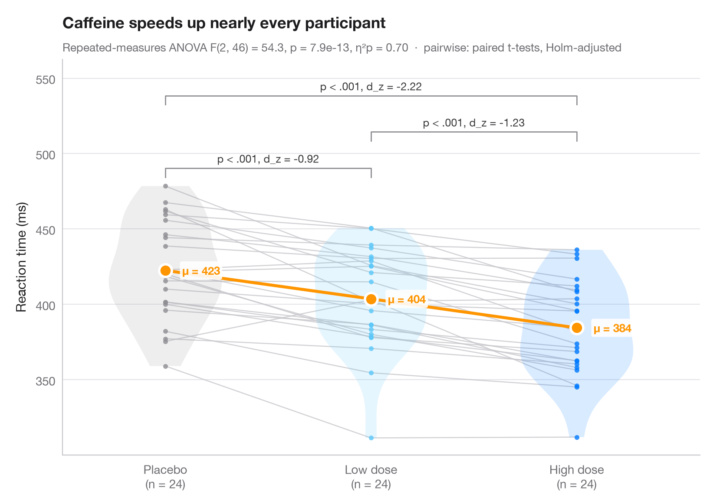

Within-subjects comparison
Repeated measures with one line per subject, means, rm-ANOVA and paired tests.

When the same subjects are measured under every condition, the interesting variation is within each person. Thin grey lines join each subject's measurements, so you can see whether almost everybody moves in the same direction; violins show the distribution per condition and the large dots (joined by a coloured line) are the condition means.
Data are simulated: 24 participants whose reaction time is recorded after a
placebo, a low and a high dose of caffeine, with a random subject effect.
The subtitle reports a one-way repeated-measures ANOVA
(statsmodels.stats.anova.AnovaRM) with partial η², and the brackets show
Holm-corrected paired t-tests (scipy.stats.ttest_rel) with Cohen's d_z.
from itertools import combinations
import matplotlib.pyplot as plt
import numpy as np
import pandas as pd
from scipy import stats
from statsmodels.stats.anova import AnovaRM
from statsmodels.stats.multitest import multipletests
# Simulated data: 24 subjects x 3 conditions, reaction time in ms
rng = np.random.default_rng(42)
conditions = ["Placebo", "Low dose", "High dose"]
n = 24
subject = rng.normal(0, 35, n) # stable person-level speed
wide = pd.DataFrame({c: 420 + subject + shift + rng.normal(0, 18, n)
for c, shift in zip(conditions, [0, -14, -32])})
long = wide.rename_axis("id").reset_index().melt("id", var_name="condition", value_name="rt")
# Repeated-measures ANOVA + partial eta squared
aov = AnovaRM(long, "rt", "id", within=["condition"]).fit().anova_table.iloc[0]
eta_p = aov["F Value"] * aov["Num DF"] / (aov["F Value"] * aov["Num DF"] + aov["Den DF"])
# Pairwise paired t-tests (Holm) with Cohen's d_z
pairs = list(combinations(range(3), 2))
tests = [stats.ttest_rel(wide.iloc[:, j], wide.iloc[:, i]) for i, j in pairs]
adj_p = multipletests([t.pvalue for t in tests], method="holm")[1]
dz = [(wide.iloc[:, j] - wide.iloc[:, i]).mean() / (wide.iloc[:, j] - wide.iloc[:, i]).std()
for i, j in pairs]
fig, ax = plt.subplots(figsize=(8, 5.6))
palette = ["#8E8E93", "#5AC8FA", "#007AFF"]
x = np.arange(3)
for _, row in wide.iterrows(): # one line per subject
ax.plot(x, row.values, color="#C7C7CC", lw=0.9, alpha=0.8, zorder=1)
for i, c in enumerate(palette):
v = ax.violinplot(wide.iloc[:, i], positions=[i], widths=0.55, showextrema=False)
v["bodies"][0].set(facecolor=c, alpha=0.15, edgecolor="none")
ax.scatter(np.full(n, i), wide.iloc[:, i], s=16, color=c, alpha=0.8, lw=0, zorder=2)
means = wide.mean()
ax.plot(x, means, color="#FF9500", lw=2.5, zorder=3)
ax.scatter(x, means, s=110, color="#FF9500", edgecolor="white", lw=2, zorder=4)
for i, m in enumerate(means):
ax.annotate(f"μ = {m:.0f}", (i, m), xytext=(14, 0), textcoords="offset points", va="center",
fontsize=9.5, fontweight="semibold", color="#FF9500",
bbox=dict(boxstyle="round,pad=0.2", fc="white", ec="none", alpha=0.9), zorder=5)
# Significance brackets
top, step = wide.values.max() + 12, 24
for h, ((i, j), p, d) in enumerate(sorted(zip(pairs, adj_p, dz), key=lambda t: t[0][1] - t[0][0])):
y = top + h * step
ax.plot([i, i, j, j], [y - 6, y, y, y - 6], color="#8E8E93", lw=1)
label = "p < .001" if p < 0.001 else f"p = {p:.3f}"
ax.text((i + j) / 2, y + 2, f"{label}, d_z = {d:.2f}", ha="center", va="bottom",
fontsize=9, color="#3A3A3C")
ax.set_xticks(x, [f"{c}\n(n = {n})" for c in conditions])
ax.set_xlim(-0.5, 2.6)
ax.set_ylim(top=top + 3 * step)
ax.set_ylabel("Reaction time (ms)")
ax.set_title("Caffeine speeds up nearly every participant", pad=26)
ax.text(0, 1.02, f"Repeated-measures ANOVA F({aov['Num DF']:.0f}, {aov['Den DF']:.0f}) = "
f"{aov['F Value']:.1f}, p = {aov['Pr > F']:.1e}, η²p = {eta_p:.2f} · "
"pairwise: paired t-tests, Holm-adjusted", transform=ax.transAxes,
fontsize=9.5, color="#6E6E73")
plt.show()
Figures use the optional PyStatlas style: add plt.style.use("pystatlas.mplstyle") to match the look exactly.
How to cite
PyStatlas is created and maintained by Thierry Warin. If it helped your work, please cite it.
Warin, T. (2026). Within-subjects comparison. In PyStatlas: The Python Gallery of Statistical Graphics. https://warint.github.io/pystatlas/group-comparisons/within-subjects/
@misc{warin2026statlas,
author = {Warin, Thierry},
title = {PyStatlas: The Python Gallery of Statistical Graphics},
year = {2026},
howpublished = {\url{https://warint.github.io/pystatlas/}},
note = {Source code: https://github.com/warint/pystatlas}
}More in Group comparisons

Between-groups comparison
Violin + box + points with Welch's ANOVA, effect size and pairwise tests.
ggstatsplot::ggbetweenstats()
Estimation plot
Raw data of two groups plus the mean difference and its bootstrap 95% CI.
dabestr::dabest() + plot()
Interaction plot
Group means with 95% confidence intervals for two factors, with a two-way ANOVA.
ggpubr::ggline(add = "mean_ci") / ggstats